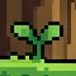

Lynn Racelo.Hosted by a previous startup. One route in, and no field for re-consent.
The new hub, shared with other PPMI studies, where the study lives now.
Why you can't just add them up
The project
PPMI Online was created as the virtual arm of the Parkinson's Progression Markers Initiative study. Over 46,000 participants complete surveys every 90 days. UCSF is a scientific team, and IND builds and runs the platform.
What I did
I was the liaison between teams. My team decided what got asked and the platform team built out the site. I translated between them, turning research needs into requests the build team could act on.
How it's used
Researchers follow the numbered boxes to a total they can defend, and anyone still pulling data by hand knows where to look. IND used the diagram to fill in fields for the new dashboard.
What changed · enrollment, key path
Design choices
Where it stands
New and legacy data all living in one place, in use by the scientific and technical teams.
Diagram serving as a template to represent the numbers, in development.
Moving into looking at specific variables and groups for statistical analysis.
Observe the pain points, listen to your team, and take action.
Once people could see the data, the numbers made sense, and the conversation slowed.
Friction, no matter how frustrating, is a signal and an opportunity to smooth things out.